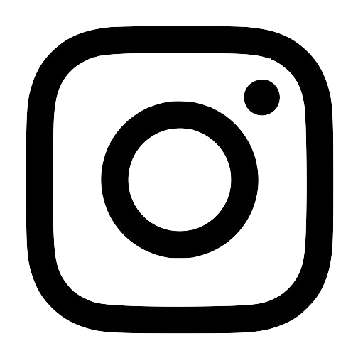

About Us
We are Rubin Web Design — a mother-daughter duo from Denmark who now call Canada home. Our style is heavily influenced by the minimal and modern Scandinavian look. Together we have over 30 years of experience in the commercial industry with focus on photography and web development.
Gaby Rubin Michaud
Hey there! I'm an adventure seeker with a passion for traveling, designing, and rock climbing. I'm currently working full-time as a paramedic in Montreal, and enjoy tackling web developement and design projects on my time off. Along with my mum, we founded Rubin Web Design in March of 2019. I taught myself how to program HTML, CSS, and Javascript two years ago which is what I use to make all my sites. I may be novice, but I'm dedicated to creating quality content that you'll be thrilled about.
Katinka Rubin
I'm a graphic designer and professional photographer living in Montréal, Québec. I teach photography at Dawson College and run a private studio where I focus on portrait, wedding and commercial photography. I specialize in Adobe Photoshop and Illustrator, and with over 20 years of experience the arts are truly my passion.